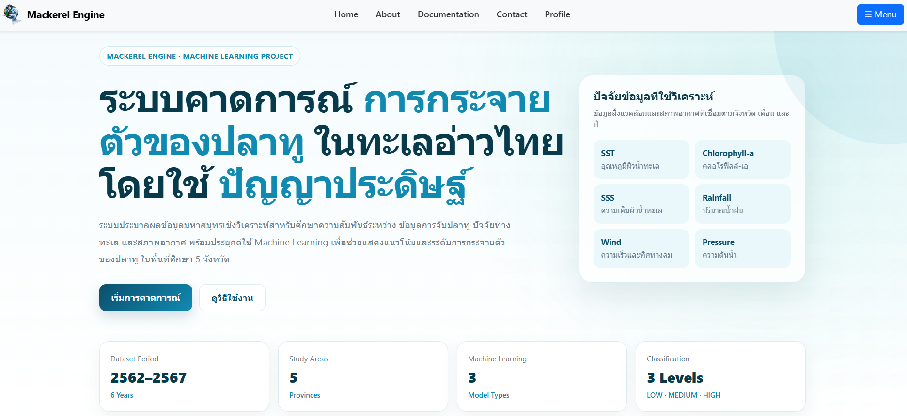

โปรเจกต์ 01 · ปี 4
ระบบคาดการณ์การกระจายตัวของปลาทูในทะเลอ่าวไทยโดยใช้ปัญญาประดิษฐ์
ระบบประมวลผลข้อมูลมหาสมุทรเพื่อวิเคราะห์และคาดการณ์การกระจายตัวของปลาทู โดยใช้ Machine Learning 3 แนวทาง ได้แก่ Regression, Classification และ Clustering
↗ ดูบน GitHub
1 / 12